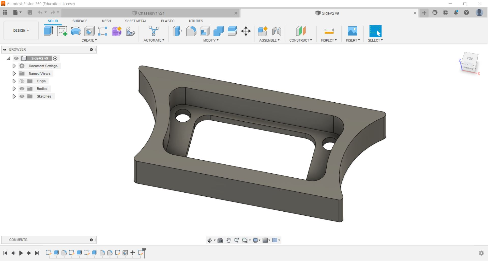

Module Project
This documents the process of fabricating the final project
Mecanum Wheel Motion

CAD Design
|
Firstly, i designed the frame of the vehicle, these are the parts that are to be laser cut. After designing it, i exported the sketches as dxf file type and i complied it using inkscape and save it as pdf. |
Next are the parts that are to be 3D printed, i exported the part as a stl file and i sliced it using cura to get the g-code for the 3D printer. |
|
 For the side panels that are to be fabricated using large format machining, i exported it as a dxf file type. |
Next, i designed the mecanum wheel by creating planes at 45 degree, from there, i can cut out flat surfaces for the rollers, and using the circular pattern function i patterned the feature 10 times to form the wheel. I mirrored the wheel to get the wheel for the opposite side. |
|
To connect the wheels to the motors, i designed a mount to hold the wheels. |
After designing the parts, i assembled it virtually the see how it looks like. |
Electronics Design
|
For the final project, i will be using the ATtiny1614 microcontroller as it has 11 i/o pins, which is enough for my project. The ATtiny1614 also uses the UPDI programmer which means i do not need to fabricate another type of programmer (e.g ISP programmer). |
According to the data sheet for the ATtiny1614, the operating supply voltage cannot exceed 5.5 Volts. I will be using 4 AA battries (total 6 Volts) to power the board and motors, therefore i need to used a diode to reduce the voltage. |
|
I downloaded the ATtiny1614 footprint from snapEDA and designed the circuit on Autodesk Eagle. Other than the 8 outputs required to control the directions of 4 DC motors, i also added an LED to help with the programming and troubleshooting. I added 2 diodes to reduce the input voltage for the motors as i feel that the motors are moving too fast when 6 Volts are applied. |
After designing the circuit, i arranged the components and connected the wires. It took me quite a few trys to be able to connect all the connections, i also had to change some of the wiring. |
PCB Fabrication & Soldering
|
After designing the circuit, i import the PNG file into the mods to generate the g-code for the Stepcraft 420. |
I had to redo the fabrication of the PCB as there are alot of burs and the connections are very thin. |
|
After that, i soldered pinheaders first and then the ATtiny1614. |
|
|
I soldered pinheaders to the wires of the battery holder so that i can add the switches and voltmeter to it. I made it able to be disconnected so that it is easier for assembly. |
Soldered jumpers to the voltmeter. |
|
Soldered jumper wires to the switch. |
I also soldered pinheads and jumper wires to the motor driver and DC motor. |
Fabrication
|
To do the large format machining, i import the dxf file into VCarve Pro to generate the toolpath for the machine to cut out the part. For this part, i used 18mm thick ply wood. |
I 3D printed the mecanum wheels and the rollers at 15% infill. |
|
I opened the PDF file in corel draw and set the line thickness and colour to hairline and red. And set the laser power to cut 3mm thick acrylic. |
|
Assembly
|
I fit the bearings into the rollers i 3D printed. |
Next, i secured the rollers to the wheel with screws. |
|
At first, i decided to use the rubber foam tape on the rollers for grip, but the tape keeps on coming off, hence i decided to use a silicon pipe instead. |
I cut the pipe to the thickness of the roller using a scissors and glued it to the rollers. |
|
For the frame, i assembled the laser cut parts and 3D printed parts using M3 screws. |
I mounted the DC motors onto it using longer M3 screws. |
|
Next, i fitted the Microcontroller and all the electronics into the chassis. I connected the i/o pins to the ATtiny1614 according to the schematic i designed in Eagle. |
I connected an extension cable for the programmer. |
Programming
|
Refering to the pinout diagram and the schematic, i named the pins accordingly (e.g MA1p --> Motor A1 +ve direction). Next i configured the LED as an input and the motors as outputs. I had to run a program to on the motors to find out the direction the motors are turning. |
In order for the motor to run, only one of the output of the motor can be turned on at a time. Hence, i created functions to control the motors. The function will on one of the outputs and off the other. |
|
Using the functions, i programmed the movements for the mecanum wheel vehicle. Different combinations of direction of the motors will result in different movements. |
After programming, i connected the programmer and PCB to my laptop to upload the program. |
Bill of Materials
| No. | Part | Price (each) | Qty. |
| 1 | On/Off switch | $1.00 | 1 |
| 2 | Battery holder | $2.00 | 1 |
| 3 | DC Motor Driver | $1.35 | 2 |
| 4 | DC Motor | $1.70 | 4 |
| 5 | 3*8*4mm Bearings X10pcs | $2.50 | 4 |
| 6 | Silicone Hose 1m 10mm diameter (for the wheels) | $3.00 | 1 |
| 7 | 2.5V-40V Digital Voltmeter | $1.70 | 1 |
| 8 | 3mm Acrylic | - | - |
| 9 | Ply wood 18mm thick | - | - |